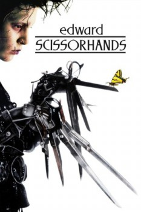

El Joven Manos de Tijera (1990)


Innocence is what he knows. Beauty is what she sees.

País:Estados Unidos, 1hr. 45min.
Idiomas:Inglés
GénerosFantasía, Drama, Romántica
Director/es:Tim Burton
Guionistas:Caroline Thompson
Códec de vídeo:H.264
Número: 468
TomatoMeter:

90%

91%
Clasificación IMDb:


7.9/10 (539.4K votos)
Certificación: